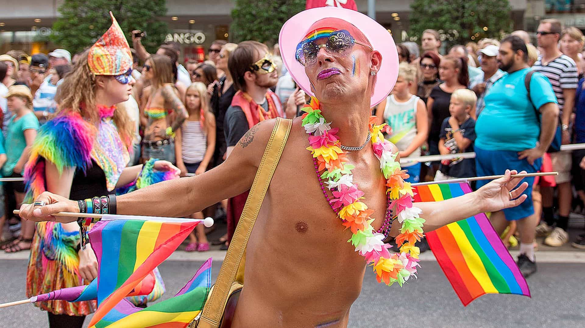
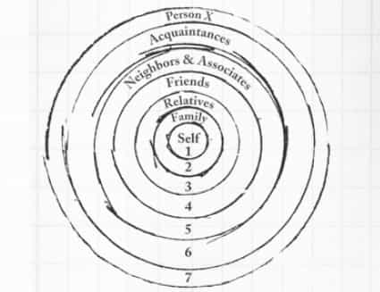

Despite the fact that ROK being a website for masculine heterosexual men, where women and homosexuals are strongly discouraged to comment, butthurt (not just in the literal sense) gay males have questioned my suggestion to not have gay friends.
While it’s not any writer’s obligation to explain each and every belief or idea being stressed, or challenge counterarguments, I think this topic requires some further analysis and exemplification. This will hopefully provide men with a more comprehensive and nuanced take on the matter.
The gay lobby and social consequences
In simple terms, homosexuality can be looked upon at two major levels: macro and micro. With macro I refer to broader social patterns and consequences of homosexuality. One such concern is that the homo or LGBT lobby nowadays quite literally penetrates the public. It’s no longer a private matter, that homosexuals and other sexual minorities are to be left alone, when depraved gay parades and gay clubs emerge in urban environments and impose their views on the public body.
Furthermore, homosexuals are often protected under hate speech laws. It’s fairly likely to lose most jobs for stressing, for example, that gay anal sex is disgusting, even if a person accepts their existence and equal individual legal rights and use a professional and polite discourse at the workplace. This is problematic, regardless of you want to associate with gay people or not.

Moreover, it exists a possible although not palpable link between homosexuality and child molestation. Mainstream science often aims for to contradict such contentions, whereas more pessimistic positions are sometimes taken by conservative scholars and writers.
In this regard, it’s possible to find an analogy to David Buss’ notion in his work The Murderer Next Door: just like most stalkers are not murderers but most murderers stalkers, most homosexuals are not pedophiles or hebephiles (or child molesters). However, a significant share of child molesters are homosexual or have partaken in illegal homosexual activities in connection to their crimes.
It’s not just people with a fixed homosexual orientation who make up the problem, but rather the (illegal and immoral) homosexual behavior itself. People can debate all day long whether or not gay genes exist, but it’s likely that both genetic and environmental factors contribute to homosexual behavior and lifestyle. Social acceptance of depravity is one piece of the puzzle.
The individual relationship with homosexuals
At the micro or individual level, on the other hand, it’s partly or largely beside the point whether or not homosexuals are more likely to be involved in illegal sexual deviance. There are a host of reasons for why majorly masculine men don’t want to have close homosexual friends. Some of these are about the same as why many don’t want to be friends with weak beta males and annoying females: one does likely have less in common with such people. The relationship is often mutually exclusive: the opposite teams do hold congruent views about you and me. And guess what, that’s totally fine, or should be.
Of course there is a lot of in-group variation, and homosexual males who you have more or less in common with. The more shared interests, the more likely that a person will be closer to your inner circle of friends. The less shared beliefs and interests, the more peripheral position.
That’s why even non-neurotic, somewhat masculine and socially skilled gay men whom I have encountered throughout life (and I have mostly lived in urban areas and traveled the world so I have met plenty of them) tend to be not so much more than acquaintances or fairly distant friends. While I can find common ground in regard to reading, traveling, food and physical exercise, some crucial dimensions are still missing. When I meet close male friends, we discuss everything between heaven and earth, including our similar relationships and sexual preferences. That’s obviously not possible to do with homosexual males.
Furthermore, in general gays are likely, although not necessarily having views that are leftist and do not accept slightly homophobic positions, for obvious reasons. This leads to unnecessary two-sided suspicion, not so much different from having a politically correct blue pill friend that you will gradually stop seeing or hearing from due to lack of shared values.

Conclusion
When a man asserts that one does not, nor should have gay friends, that is more of a general guideline rather than an absolute dogma. There are predominantly masculine red pill males that have met or will meet gay males that they form meaningful platonic relationships with. However, given the whole of the matter it’s less likely the case, and from my perspective I don’t see that I miss anything; just like I don’t miss having several female or weak beta male friends.
Read More: Straight Men Will Soon Be Called Homophobic For Not Sleeping With Gays And Trannies